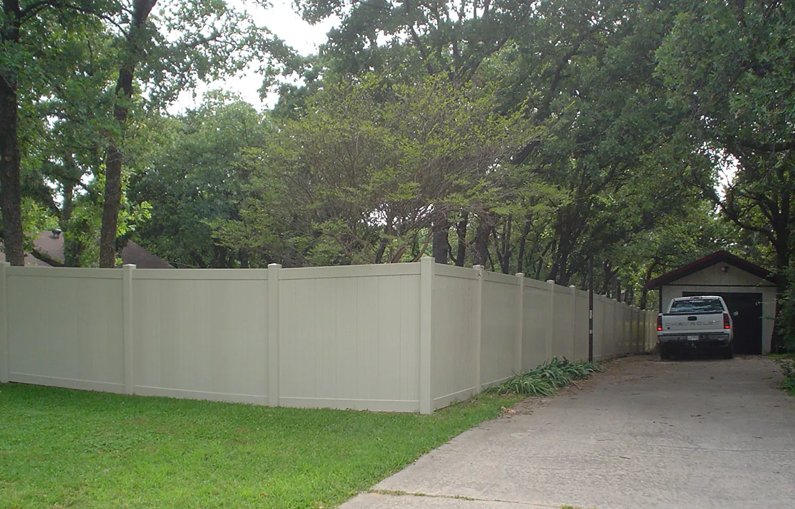
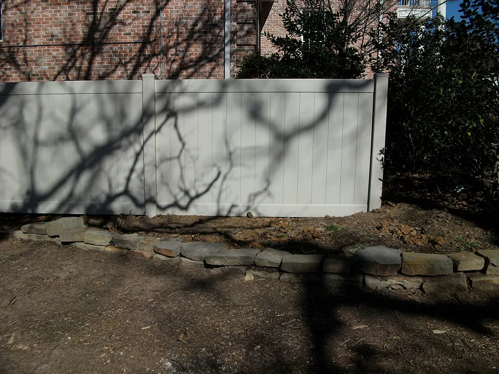
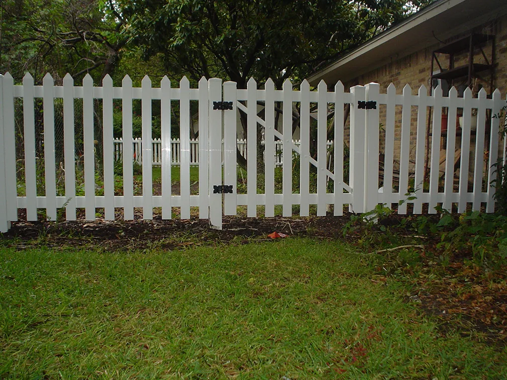

SERVICES / VINYL FENCESVinyl Fences
Vinyl Fences
in Denton, TX
Vinyl fencing is one of Denton Fence’s published services, with project photographs showing a selection of fence styles and colors.
05 / 09
WHAT TO KNOWVinyl Fences
Vinyl Fences
for your property.
Vinyl examples in the company gallery offer different visual directions, including privacy-oriented and more open fencing. The right starting point is the look you want and the property you need to fence.
A useful starting question
Which vinyl fence examples fit the character of your space?
FROM THE ORIGINAL PROJECT GALLERY
View all photos ↗See the work.


VINYL / EXPLORE THE LOOKClean lines.
Clean lines.
Different settings.
Use the photographs to compare how vinyl fencing looks with different property styles. The gallery includes light-toned and privacy-oriented examples.
LET'S TALK FENCINGTell us what
Tell us what
you have in mind.
Share the fence style or service you are considering and where the property is located.